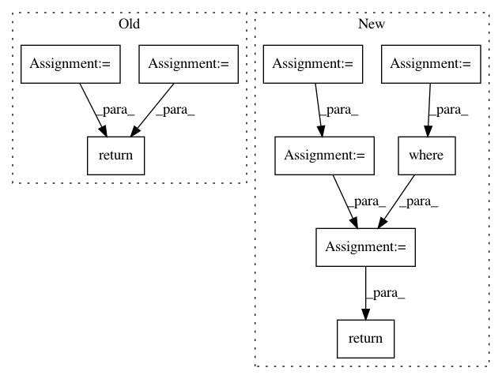

eb4732369125efb8c9c87ad79544e99c1aa3b67e,keras_rcnn/applications/_jhung2019.py,JHung2019,predict,#JHung2019#Any#Any#Any#Any#,294
Before Change
self.load_weights("JHung2019.hdf5", by_name=True)
def predict(self, x, batch_size=None, verbose=0, steps=None):
target_bounding_boxes = numpy.zeros((x.shape[0], 1, 4))
target_categories = numpy.zeros((x.shape[0], 1, self.n_categories))
target_metadata = numpy.array([[x.shape[1], x.shape[2], 1.0]])
x = [
target_bounding_boxes,
target_categories,
x,
target_metadata
]
return super(JHung2019, self).predict(x, batch_size, verbose, steps)
After Change
predicted_bounding_boxes, predicted_categories = prediction
predicted_bounding_boxes = numpy.squeeze(predicted_bounding_boxes)
predicted_categories = numpy.squeeze(predicted_categories)
predicted_categories = numpy.argmax(predicted_categories, axis=-1)
indices = numpy.where(predicted_categories > 0)
predicted_bounding_boxes = predicted_bounding_boxes[indices]
predicted_categories = predicted_categories[indices]
return predicted_bounding_boxes, predicted_categories
In pattern: SUPERPATTERN
Frequency: 3
Non-data size: 9
Instances
Project Name: broadinstitute/keras-rcnn
Commit Name: eb4732369125efb8c9c87ad79544e99c1aa3b67e
Time: 2019-04-30
Author: allen.goodman@icloud.com
File Name: keras_rcnn/applications/_jhung2019.py
Class Name: JHung2019
Method Name: predict
Project Name: tensorflow/ranking
Commit Name: 6bf3f51cd0a312da842157665663c2dad9983248
Time: 2021-01-29
Author: xuanhui@google.com
File Name: tensorflow_ranking/python/losses_impl.py
Class Name: ClickEMLoss
Method Name: _compute_latent_prob
Project Name: ntucllab/libact
Commit Name: e857888dff9361561fcc96068ab50f79ed5a26bc
Time: 2017-01-30
Author: yangarbiter@gmail.com
File Name: libact/query_strategies/query_by_committee.py
Class Name: QueryByCommittee
Method Name: make_query